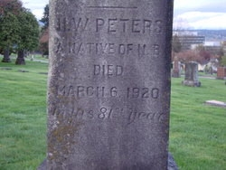
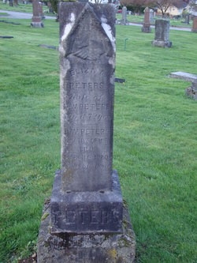
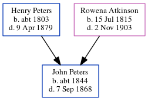

Henry Watson Peters 1839 - 1920
[ Home ] | [ Calendar ] | [ Surnames Index ] | [ Errors ] | [ Family History ]The child of Henry Peters and Rowena Atkinson, Henry Peters, the second cousin three-times-removed on the father's side of Nigel Horne, was born in New Brunswick, Canada on 3 May 18391,2,3,4,5,6,7,8,9,10 and had 4 children with Elizabeth A Cook: Selina, James Bedford, Capt. Albert Goodrich and Harrison Fletcher.
During his life, he was living in Richibucto, Kent, New Brunswick in 18611 and in 18712 (the same place as his father had been living in 1861); in Kent, New Brunswick, Canada in 18813; in New Westminster, British Columbia, Canada in 18914; and in Richibucto, New Brunswick in 19018 (the same place as his mother had been living in 1871).
He died on 6 Mar 1920 in New Westminster6,9,11 and was buried at Fraser Cemetery, New Westminster, Greater Vancouver, British Columbia after 6 Mar 19209.
Parents
- Henry Warman was born c. 1803
- Rowena Noble Charlotte was born on 15 Jul 1815
Children
- Selina was born in 1863
- James Bedford was born on 7 Jul 1864
- Capt. Albert Goodrich was born on 4 Nov 1865
- Harrison Fletcher was born on 29 Aug 1867
Citations
- 1861 Census of Canada Ancestry.com Operations Inc (Relation to Head of House: Son)
- 1871 Census of Canada Ancestry.com Operations Inc (Marital Status: Married)
- 1881 Census of Canada Ancestry.com Operations Inc (Marital Status: Married)
- 1891 Census of Canada Ancestry.com Operations Inc (Marital Status: MarriedRelation to Head of House: Head)
- 1901 Census of Canada Ancestry.com Operations Inc
- British Columbia, Canada, Death Index, 1872-1990 Ancestry.com Operations Inc
- Canada Census 1861 - Findmypast
- Canada Census 1901 - Findmypast (was the brother of the head of the household)
- Canada, Find A Grave Index, 1600s-Current Ancestry.com Operations, Inc.
- Kent County, New Brunswick Census, 1871: Eight Subdistricts Ancestry.com Operations Inc
- British Columbia, Canada, Death Index, 1872–1992 - Findmypast
Media
Henry Watson Peters - Headstone 2

Henry Watson Peters - Headstone 1

British Columbia, Canada, Death Index, 1872–1992 - US/MCV/126823/0495405677653436
Canada Census 1901 - CAN/CENSUS/1901/00511887
Family Tree
Map
Generated by ged2site. Last updated on Jul 3, 2024
Known Issues
May have been living with mother on 1861, but the addresses don't match or aren't detailed enough to be sure
May have been living with father on 1861, but the addresses don't match or aren't detailed enough to be sure
May have been living with mother on 1871, but the addresses don't match or aren't detailed enough to be sure
May have been living with mother on 1901, but the addresses don't match or aren't detailed enough to be sure
Adding date of burial as 'aft 6 Mar 1920'